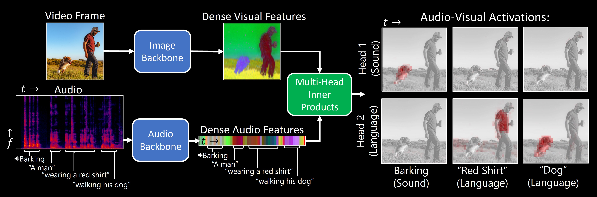

Separating the "Chirp" from the "Chat":
Self-supervised Visual Grounding
of Sound and Language
CVPR 2024
Mark Hamilton, Andrew Zisserman, John R. Hershey, William T. Freeman

TL;DR: Our model, DenseAV, learns the meaning of words and the location of sounds (visual grounding) without supervision or text.